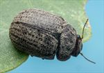
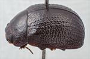
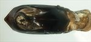
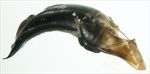
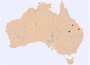

Click on images to enlarge
{kind=link}

Female, Capella, central Queensland
{kind=link}

Male, Eidsvold, Queensland
{kind=link}

Aedeagus, dorsal view (Longreach, Queensland)
{kind=link}

Aedeagus, lateral view (Longreach, Queensland)
{kind=link}

Distribution
Name
Trachymela sp. Ta241
Reference specimen
25-055736, Charleville, 15km E of, Queensland
Adult Description
Length: ♀ 8.6-9.7 mm [8], ♂ 8.1-8.5 mm [2].
Colour: head: uniformly dark-brown, fronto-clypeal suture sometimes narrowly black, especially laterally, black sometimes extending onto clypeus, labrum yellow-brown, base and tips of mandibles black; antennomeres 1-6 light-brown, 7-11 grading from light-brown to darker brown, rarely only slightly darker, sometimes with the darker colour confined to distal half of segments; pronotum: almost uniformly dark-brown, same shade as head, rarely with a poorly defined longitudinal black patch on each side of discal area; scutellum: completely black; elytra: dark-brown, same shade as pronotum, with VR2-VR9 with relatively closely and evenly spaced, small, black and shiny verrucae, humeral callus black; venter: black, epipleura black. Cuticular wax: pale-brown in colour and distributed quite evenly throughout, though not on the verrucae, so the rows of these appear quite prominent, enhancing the insects striped appearance.
Shape: rather flattened over much of central section of insect, highest point at or behind middle of elytral margin, ventrites may project a considerable distance below elytral epipleurae. Head; punctures quite variable in size (pd~2-3xef) and slightly unevenly but moderately densely distributed. Antennae moderate in length (AL ♂=36.4%BL, ♀=32.3%BL), filiform. Pronotum; evenly curved transversely over discal region, only extreme lateral margins slightly to moderately strongly explanate, with foveal depression very shallow and almost always with a rounded, more weakly punctured elevation near its lateral edge, puncturation clearly impressed, evenly and moderately densely distributed in discal area with a mix of large and much smaller puncture sizes present, the larger similar in size to those on head, becoming much coarser at lateral margins. Front margins join the slightly thinner lateral margins in a smoothly rounded right-angle, with lateral margin straight for a short distance before curving smoothly and gradually and increasing in thickness towards rear margin; widest in posterior half, often close to rear margin (width/length=2.0-2.15). Scutellum; surface smooth, scattered with punctures that are similar in size as on adjacent pronotum, but not as deeply impressed, rarely punctures much finer. Elytra; surface slighly but noticeably flattened around highest point, curvature then increases considerably towards apex, with dorsal surface joining ventral at about 90⁰, punctures evenly distributed, large and mostly distinct throughout, with interstices a little to quite convex, with much finer punctures scattered throughout on the interstices, longitudinal rows of small, roughly evenly spaced and moderately elevated interstices arranged along rows VR2-VR9 as described above, posterior third of elytral suture slightly carinate, marginal sulcus slighly concave in posterior quarter, fringed on its inner side by elevated row of verrucae, surface slightly discontinuous under humeral callus, lateral margins markedly sinuous; vertical extension of epipleura slight (HCE/PW=0.29-0.33). Venter; Prosternal process almost parallel-sided or narrowing slightly anteriorly (particularly in Carnarvon specimens), closed anteriorly, short setae present at rear of prosternal process and on mesosternum, a single seta on anterior and median trochanter; front edge of metasternum beveled, truncate; inner edge of posterior of epipleurae lacking setae. Aedeagus; relatively short (LPE=31-33%BL), in dorsal view, sides diverging gradually from basal sulcus to within 40% of apex, then converging gradually to 20%, from where sides converge towards apex in almost a straight line, dorsal surface smoothly curved with dorso-median channel absent or very faint, dorsolateral channels short, ostial opening very large, taking up 50% of length from basal sulcus to apex, tip broad and triangular; in lateral view, curved moderately and evenly from basal sulcus to about halfway to apex, when curvature increases noticeably, thinning towards apex over about 25% of length, tip deflexed, flagellum relatively thick, spiralling.
Larvae
Unknown.
Eggs
Unknown.
Similar species
Ta37 – this species shares the longitudinal rows of verrucae but alternate rows have the verrucae much more sparsely arranged. Its surface texture is more nitid than that of Ta241.
Notes
Some specimens are very dark brown in colour and the black patches on the pronotum and the lines of verrucae on the elytra are then not very clearly differentiated. The species is notable for the exceptionally large ostial opening of the aedeagus.
Ta241 has been collected almost exclusively from box-barked Eucalyptus species (Symphyomyrtus : Adnataria), including E. populnea (4 records).
Copyright © 2026. All rights reserved.